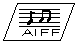
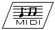
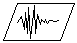

2.3.4 Audio Data Development Process
Developing Audio Data
To develop audio for your games, use the following processes in combination with sound development tools like N64 Sound Tools for the PC.

How to Make Wave Table Audio Data (SGI)
- Sample the voice source data by using any of the many available third-party tools to make the AIFF format file.
- Make a code book (a predictive coefficient table) used for the ADPCM encode by using the N64 tabledesign audio development tool.
- Compress the AIFF format file to the AIFC (ADPCM) format by using the N64 vadpcm_enc audio development tool.
- Make the source file (.inst file) used by the N64 ic audio development tool. The ic source file has defined objects that compose the bank by using a language similar to the C language.
- Make the bank files (.tbl, .ctl, and .sym files) by using the N64 ic audio development tool. The bank files are the informational data files used for audio synthesis by the audio library.

How to Make MIDI Sequence Audio Data (SGI)
- Make the MIDI file by using any of the many available third-party tools.
- If the MIDI file is Type 1, convert it to Type 0 by using the N64 midicvt audio development tool.
- When you generate the compact MIDI data generally used for a game program, convert the Type 0 MIDI file to the compact MIDI file by using the N64 midicomp audio development tool.
- Make the sequence bank file (.sbk file) by using the N64 audio development tools.
- Pass the bank files (.tbl, .ctl, and .sym files) to the programmer.
Setting the Sampling Rate

Establish the standard output rate for your game between 22.05kHz and 44.1kHz. In N64, if the rate is too high, the processing time in the RSP takes longer. If you establish a low rate, the processing time in the RSP is shortened, and you can increase the number of voices.
An output rate greater than 32kHz has little effect on human hearing, and a rate less than 22.05kHz produces sampling noise that significantly reduces sound quality.
Develop the audio data using a sampling rate that is as close as possible to the N64 reproduction output rate to ensure good sound quality. If you cannot decide on the exact output rate in advance, develop the audio using a higher sampling rate first, and then convert it to a lower rate if necessary. This will minimize any decline in sound quality.
Nintendo® Confidential
Copyright © 1999
Nintendo of America Inc. All Rights Reserved
Nintendo and N64 are registered trademarks of Nintendo
Last Updated March, 1999